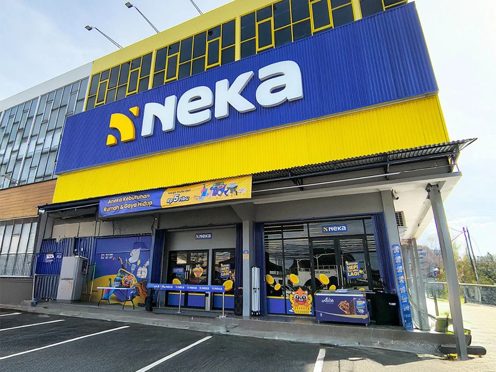
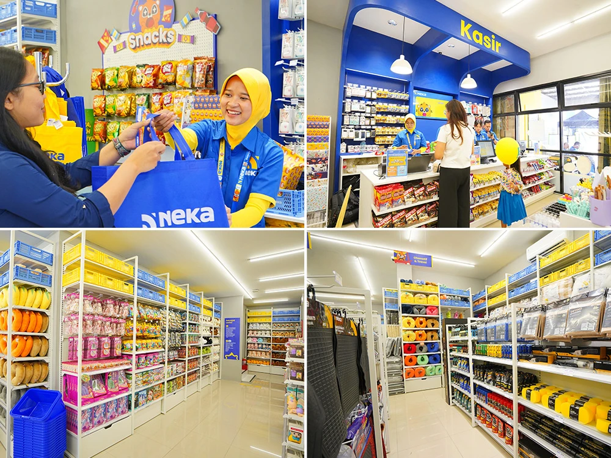

NEKA: Model Bisnis, Store Concept & Prospek Format Diskon Rumah Tangga ACES
Bagaimana PT Aspirasi Hidup Indonesia Tbk (Grup Kawan Lama) membuka 35 toko diskon di ruko permukiman dalam 13 bulan, berapa kira-kira keekonomiannya per toko, dan apa yang belum terbukti
Tanggal data 27 November 2026
Sudut pandang Analis independen
Basis data Sumber publik saja
01 · Ringkasan Eksekutif
NEKA: opsi pertumbuhan yang murah dan masuk akal, tetapi belum menjadi mesin pertumbuhan
NEKA adalah toko diskon kebutuhan rumah dan gaya hidup milik ACES. Tokonya berupa ruko kecil (<700 m²) di jalan permukiman pinggiran kota dan kota tier-2, dengan harga mulai Rp5 ribu. Jaringannya tumbuh cepat dan sudah menyebar ke 8 provinsi, tetapi lajunya masih di bawah target manajemen. Profitabilitas per tokonya juga belum pernah diungkap.
35
Toko per 31 Okt 2026 DATA
+25 toko sejak awal 2026; 31 toko per 30 Sep (laporan 9M26)
Konsep: toko diskon "aneka kebutuhan rumah & gaya hidup" untuk konsumen massal. Manajemen mengklaim lebih dari 10 ribu SKU dalam 15+ kategori, rata-rata belanja Rp80–100 ribu, dan <10 karyawan per toko. Tagline-nya "Belanja Hepi, Gak Mikir Lagi!".
Pola ekspansi: dimulai dari Jabodetabek–Banten (10 toko di 2025), lalu melompat ke Lampung, Palembang, Semarang, Solo, Yogya, Cirebon dan Kediri pada 2026. Pembiayaannya dari kas internal ACES, yang tidak punya utang berbunga.
Pembeda vs MR. DIY: menjual FMCG (Mayora, Wings, Aice) dan produk kecantikan yang tidak ada di MR. DIY, ditambah white label NEKA serta Krisbow/KRIS. SKU yang tumpang tindih dengan AZKO di bawah 5%, sehingga risiko saling makan pasar dengan AZKO rendah.
Keekonomian per toko (estimasi): omzet sekitar Rp0,45 M/bulan dan margin kotor yang ditargetkan sekitar 45% memberi kontribusi toko sekitar 11%. Balik modal ±3 tahun pada skenario dasar. Titik impas sekitar 120 transaksi per hari.
Yang belum terbukti: laba per toko, kemampuan menjaga margin kotor 45% di tengah persaingan harga dengan MR. DIY (margin kotor MR. DIY sendiri turun sekitar 4 poin dalam setahun), dan kemampuan mempercepat pembukaan toko ke 4–6 per bulan.
Dampak bagi ACES: kecil hingga 2028. Pada skenario dasar, omzet NEKA sekitar Rp0,5 T atau ±5% pendapatan ACES. NEKA baru menjadi material jika laju pembukaan naik ke ≥6 toko/bulan dengan produktivitas per toko yang terjaga.
DATA diungkapkan perusahaan atau media · ESTIMASI perhitungan analis. Omzet per toko diturunkan dari kunjungan toko oleh BRI Danareksa Sekuritas (Jan 2026; 150–200 transaksi/hari × Rp80–100 ribu).
02 · Profil & Trajektori Pertumbuhan
Dari 1 ke 35 toko dalam 13 bulan; laju naik sejak Juni 2026
Fase uji di Jabodetabek–Banten menghasilkan 10 toko hingga akhir 2025. Kuartal I-2026 nyaris diam (hanya +2 toko). Sejak Juni lajunya naik ke rata-rata 4,2 toko per bulan, dan jaringan masuk ke Sumatera serta Jawa Tengah–Timur.
Jumlah toko NEKA (akhir periode)
AktualProyeksi skenario dasarEST
Sumber: Sep-25 dari blog lokal (toko pertama Serang, 23 Sep 2025). Des-25 dan Mar-26 dari rilis dan paparan ACES. Jun-26 (20) dan Agu-26 (26) dari paparan publik 10 Sep 2026. Sep-26 (31) dari laporan 9M26. Okt-26 (35) = 31 + 4 toko yang dibuka di bulan Oktober. Belum ditemukan pengumuman pembukaan di bulan November. P = proyeksi.
Struktur kepemilikan
Grup Kawan Lama · pemegang saham pengendali
▼
PT Aspirasi Hidup Indonesia Tbk (ACES) AZKO (282 toko), Toys Kingdom, ATARU, Pendopo
▼ merek/format baru
NEKA · diluncurkan Q3-2025 GM Sales Operations: Amir Situmorang
Fakta kunci
Toko pertama: Jl. Ahmad Yani 152, Serang, dibuka 23 Sep 2025 (sumber: blog lokal, belum dikonfirmasi rilis resmi)
Diperkenalkan resmi ke media pada 29–30 Jan 2026; kontribusinya dipandu <5% pendapatan dan laba ACES pada 2026
Target 2026: 40–50 toko baru (Apr 2026), masih dipertahankan per Nov 2026 menurut BRI Danareksa
Pendanaan internal: ACES dalam posisi kas bersih, tanpa utang berbunga
03 · Pasar & Target Market
Membidik keluarga muda kelas menengah-bawah di permukiman padat, bukan pengunjung mal
Dari 30 toko yang lokasinya teridentifikasi, belum ada satu pun yang berada di mal. Semuanya ruko di jalan raya permukiman, di kota satelit Jabodetabek, ibu kota provinsi di Sumatera, dan kota tier-2 di Jawa.
Sebaran 35 toko per klaster
Jabodetabek: Ciputat, Ciledug, Kreo, Pinang, Cisoka, Condet, Meruya, Hankam, Jatimakmur, Meruyung, Dramaga, Leuwiliang, Cilendek. Lampung: Bandar Jaya, Ratu Dibalau, Urip, Metro, Diponegoro. Jateng & DIY: Kaliurang, Gedong Kuning, Semarang Hasanudin dan Mulawarman, Nusukan (Solo). Sumsel: M. Isa (Palembang), Kayuagung. Ada 5 toko yang dibuka Jul–Agu 2026 tanpa rilis lokasi.
Segmen sasaran
1
Keluarga muda & pelajar usia 20–40 tahun
Sasaran yang dinyatakan manajemen. Kunjungan broker ke toko Jatimakmur (Bekasi) mencatat lalu lintas pembeli dari pelajar dan ibu rumah tangga, karena toko dekat sekolah.
2
"Mass customer" di pinggiran kota & tier 2–3
Kawasan padat yang "belum terlayani optimal oleh ritel modern" (rilis ACES, Sep 2026).
3
Pembeli harian bernilai kecil
Rata-rata transaksi Rp80–100 ribu. Barang terlaris: aksesori, alat tulis, dan sebagian perlengkapan rumah tangga (BRIDS).
Segmen 1 dan 2 dinyatakan manajemen. Segmen 3 disimpulkan dari data transaksi.
Pola lokasi & perilaku
Dekat aktivitas harian: ruko di jalan arteri permukiman, dekat sekolah dan perumahan
Lompat ke ibu kota provinsi di luar Jawa: Lampung menjadi klaster terbesar kedua (5 toko)
Mengisi celah di bawah AZKO: AZKO berada di mal/standalone besar; NEKA di lokasi yang terlalu kecil untuk AZKO
Konteks pasar DATA
Konsumsi rumah tangga Q2-2026 tumbuh 5,06% yoy, tetapi ekonom (CORE, BRI) menilai daya beli kelas menengah-bawah masih tertekan
20% kelompok terkaya menyumbang ±45% konsumsi rumah tangga (CORE)
SSSG ACES melambat dari 4,3% (Q1) ke 2,2% (H1) dan 2,4% (9M26)
04 · Barang Jualan & Strategi Marketing
Yang dijual adalah harga murah dan kunjungan rutin; FMCG menjadi pembeda
Kategori NEKA mirip MR. DIY. Bedanya, NEKA menjual camilan, minuman, es krim dan produk kecantikan agar orang datang lebih sering, ditambah white label NEKA dan merek grup Kawan Lama.
Merchandise mix
Kategori
Catatan
Aksesori & alat tulis
Terlaris menurut kunjungan toko BRIDS
Rumah tangga, dapur, kebersihan, penyimpanan
Inti assortment; sebagian white label NEKA
Listrik, gadget & aksesori elektronik
Kipas portabel, power bank, earphone; overlap kecil dengan AZKO
Snack, minuman & kecantikan
Mayora, Wings, Paragon, Aice: pembeda vs MR. DIY
Otomotif, olahraga, travel, mainan
Terlihat di foto toko (karpet dan perawatan mobil)
Dekorasi, tekstil, taman & hewan
Sesuai daftar kategori resmi
Klaim manajemen >10 ribu SKU; BRIDS hanya menghitung ±4 ribu SKU di Jatimakmur (Jan 2026).
Value proposition vs pesaing
Atribut
NEKA
MR. DIY
AZKO
Lokasi
Ruko jalan permukiman
Ruko, mal, hingga kota kecil
Mal & standalone kota
Luas toko
<700 m² (400–800)
Tidak diungkap
2.000–2.500 m²
Harga
Mulai Rp5 ribu; rak serba Rp10 ribu/Rp25 ribu
Harga rendah, perkakas lengkap
Menengah–atas
Pembeda
FMCG + kecantikan + white label
Skala 1.416 toko, variasi perkakas
Luas assortment, layanan
Tenaga kerja
7 orang / 2 shift
Tidak diungkap
>2× NEKA (toko standalone kecil)
Margin kotor
Target ±45%
51,3% (9M26)
47–48%
MR. DIY: margin kotor dihitung dari laba kotor Rp3,69 T ÷ pendapatan Rp7,19 T (9M26). AZKO dan NEKA: BRIDS (Jan 2026). Perbandingan harga per barang belum dilakukan.
Taktik promosi
Jangkar harga: spanduk "Harga mulai dari Rp5 ribu" di fasad
Rak harga tetap: serba Rp10.000 dan Rp25.000 (blog lokal)
Impulse buying: freezer Aice di depan toko, snack dan aksesori ponsel di kasir
Community marketing: disebut manajemen sebagai pendorong produktivitas
Omnichannel
Instagram @haloneka; domain neka.id disebut media (tidak dapat diakses saat riset)
Belum ditemukan penjualan online NEKA atau integrasi ke ruparupa
Program loyalti khusus NEKA: tidak ditemukan
05 · Store Concept
Satu format inti: ruko kecil berfasad biru-kuning dengan rak terbuka
Fasad berfungsi sebagai papan iklan: logo besar, spanduk harga mulai Rp5 ribu, dan maskot. Di dalam, rak putih dengan keranjang warna-warni membuat toko terlihat penuh barang dan mudah dijelajahi.

Fasad toko NEKA: ruko 2–3 lantai dengan parkir depan. Foto dari pemesan laporan; lokasi tidak disebutkan.

Interior: zona snack dengan pegboard, kasir dengan barang impulsif, lorong storage, dan lorong otomotif. Sumber foto sama.
Anatomi toko
1
Fasad & papan nama
Biru-kuning, logo NEKA berukuran besar, terbaca dari jalan raya
2
Spanduk jangkar harga
"Aneka Kebutuhan Rumah & Gaya Hidup – Harga mulai dari Rp5 ribu"
3
Teras aktif
Freezer es krim, maskot Niko, area promo; parkir motor/mobil di depan
4
Interior swalayan
Rak terbuka, keranjang warna, signage kategori; kasir dikelilingi snack dan aksesori
5
Operasi ramping
7–<10 karyawan, 2 shift; buka 09.00–22.00 setiap hari
Format
Jumlah
Lokasi
Luas
SKU
Peran
Ruko standalone
35
Jalan raya permukiman, kota satelit & tier-2
400–800 m² (paparan terbaru: <700 m²)
±4 ribu (observasi) s.d. >10 ribu (klaim)
Format inti
Ruko bertingkat (contoh: M. Isa Palembang)
≥1
Kota besar luar Jawa
3 lantai (blog lokal)
Tidak diungkap
Variasi untuk lokasi padat
Belum ada format shop-in-shop di AZKO atau mal yang teridentifikasi.
06 · Capex & Unit Economics
Skenario dasar: satu toko NEKA balik modal sekitar 3 tahun, dengan rentang yang sangat lebar
ACES tidak mengungkap capex, omzet, atau laba per toko NEKA. Estimasi di bawah dibangun dari data transaksi hasil kunjungan broker, target margin kotor manajemen, dan biaya operasional ruko yang wajar. MR. DIY dipakai sebagai patokan produktivitas.
Asumsi per toko (per bulan) EST
Metrik
Pesimis
Dasar
Optimis
Transaksi/hari × nilai rata-rata
150 × Rp80rb
170 × Rp88rb
200 × Rp100rb
Omzet per bulan
Rp360 jt
Rp450 jt
Rp600 jt
Margin kotor
43%
45%
46%
Gaji (7–8 org), sewa, utilitas
Rp130 jt
Rp118 jt
Rp115 jt
Logistik, susut, overhead (% omzet)
9%
8%
7%
Kontribusi toko
≈ Rp0
Rp48 jt (11%)
Rp119 jt (20%)
Capex (fit-out, rak, AC, IT, signage)
Rp2,1 M
Rp1,8 M
Rp1,5 M
Payback
tidak balik modal
~37 bulan
~13 bulan
Belum termasuk persediaan awal (±Rp0,6–0,9 M) dan sewa dibayar di muka. Cek silang: capex ACES 9M26 sebesar Rp144,8 M membiayai 19 AZKO + 21 NEKA + renovasi; angka itu konsisten dengan capex NEKA sekitar Rp1,5–2 M per toko jika AZKO standalone sekitar Rp5 M per toko.
Kurva payback ilustratif per toko (Rp miliar, kumulatif) EST
Arus kas dianggap konstan sejak bulan pertama, tanpa masa ramp-up. Skenario pesimis berada di titik impas operasional sehingga tidak pernah menutup capex.
~120 trx/hari
Titik impas operasional per toko EST
Biaya tetap Rp118 jt ÷ (45% − 8%) ≈ Rp319 jt/bulan
74%
Produktivitas vs MR. DIY EST
Rp450 jt vs ±Rp608 jt/toko/bulan (MDIY 9M26: Rp7,19 T ÷ rata-rata 1.315 toko)
45% / 51%
Margin kotor NEKA (target) vs MR. DIY DATA
Margin kotor MR. DIY turun dari 55,5% (9M25) ke 51,3% (9M26): tanda persaingan harga
~1%
Porsi NEKA dari pendapatan ACES 2026 EST
±Rp75–125 M dari ±Rp9,1–9,4 T; sejalan dengan panduan manajemen "<5%"
07 · Strategi Ekspansi & Proyeksi
Target 40–50 toko baru di 2026 kemungkinan meleset; skenario dasar ~126 toko pada akhir 2028
Realisasi 25 toko baru hingga Oktober berarti NEKA perlu membuka 15–25 toko dalam November–Desember, atau 7–12 toko per bulan. Itu 2–3 kali laju terbaiknya selama ini. Modal bukan kendala; yang menentukan laju adalah ketersediaan lokasi, kesiapan rantai pasok, dan bukti produktivitas toko.
1
Uji di satu koridor (Sep–Des 2025)
10 toko di Serang, Pandeglang, Tangerang, Depok, Bogor, Bekasi, Condet
2
Jeda & lompat ke luar Jawa (Mar–Mei 2026)
Hanya 4 toko baru, semuanya di Lampung (Bandar Lampung, Bandar Jaya, Metro)
3
Akselerasi (Jun–Agu 2026)
12 toko: Bogor, Tangerang, Palembang, Yogyakarta, Subang, dan lainnya
4
Masuk Jawa Tengah & Timur (Sep–Okt 2026)
9 toko: Semarang (2), Solo, Cirebon, Lampung, Yogyakarta, Kayuagung, Meruya, Kediri
5
Kriteria lokasi (manajemen)
Potensi pasar lokal, estimasi penjualan per m², kesiapan rantai pasok; memakai data pelanggan grup
Target vs realisasi DATA
Periode
Target 2026
Realisasi kumulatif
Apr 2026 (target awal)
40–50
2 (Mar)
Agu 2026 (paparan publik)
40–50
16
Okt 2026
40–50
25
Proyeksi jumlah toko per skenario EST
Skenario
Laju
Toko 2026
Omzet 2027
Omzet 2028
Capex tambahan s.d. 2028
Konservatif
~2 toko/bln
39
~Rp0,19 T
~Rp0,29 T
~Rp0,09 T
Dasar
~3,5 toko/bln
42
~Rp0,29 T
~Rp0,51 T
~Rp0,15 T
Agresif
5–6 toko/bln
45
~Rp0,45 T
~Rp0,91 T
~Rp0,26 T
Omzet = rata-rata jumlah toko × omzet per toko (Rp0,36 / 0,45 / 0,55 M per bulan) × 12 × faktor ramp-up (0,85 di 2027; 0,9 di 2028). Capex = toko baru × Rp1,8 M. Pada skenario dasar, NEKA ≈ 5% pendapatan ACES 2028 (asumsi ACES tumbuh 7%/tahun).
08 · Lanskap Persaingan & SWOT
Pendatang kecil di arena yang dikuasai MR. DIY; skalanya 1/40
NEKA bersaing langsung dengan MR. DIY di segmen diskon non-pangan menengah-bawah. MR. DIY menambah sekitar 270 toko per tahun, kira-kira delapan kali jumlah seluruh toko NEKA saat ini. Miniso dan KKV bermain di mal dengan harga lebih tinggi.
Jumlah toko ritel diskon/gaya hidup non-pangan (2026)
MR. DIY dan AZKO per Sep 2026 (laporan 9M26). MINISO: "lebih dari 300 toko" (rilis Nov 2026; sumber lain menyebut 357–380). KKV: rencana awal 10 toko (Apr 2026). NEKA per Okt 2026.
NEKA
MR. DIY
MINISO
Induk
ACES / Kawan Lama
MDIY (Mr DIY Group, Malaysia)
MINISO (Tiongkok)
Format
Ruko permukiman
Ruko & mal, hingga kabupaten
Mal
Ekspansi 2026
25 toko (s.d. Okt)
202 toko (s.d. Sep); target ≥270
Format besar (SUPER MINISO)
Kinerja 9M26
Tidak diungkap
Pendapatan Rp7,19 T (+24,5%); laba Rp894 M
Tidak diungkap (non-listed ID)
Strengths
Neraca ACES: kas bersih, tanpa utang berbunga
Sourcing dan white label grup (Krisbow/KRIS), sistem dan DC yang sudah ada
Format ramping: 7 karyawan, capex di bawah AZKO
FMCG dan kecantikan menambah frekuensi kunjungan
Overlap SKU dengan AZKO <5%: kanibalisasi rendah
Weaknesses
Belum ada bukti toko menghasilkan laba
Skala 2,5% dari MR. DIY: daya tawar pembelian lebih lemah
Realisasi pembukaan toko di bawah target
Klaim SKU (>10 ribu) jauh di atas observasi (±4 ribu)
Merek baru, belum ada kanal online sendiri
Opportunities
Kota tier 2–3 dan Sumatera dengan penetrasi ritel modern rendah
Konsumen makin "value-driven" saat daya beli tertekan
Menambah porsi white label untuk menaikkan margin
Data pelanggan grup untuk memilih lokasi
Threats
MR. DIY merebut lokasi lebih dulu; margin kotornya turun sekitar 4 poin, tanda tekanan harga
Marketplace (Shopee, TikTok Shop) untuk barang murah
Daya beli menengah-bawah melemah
Rupiah melemah dan aturan impor menekan harga pokok barang impor
09 · Penilaian Independen & Indikator yang Perlu Dipantau
Proposisi nilainya menjanjikan; profitabilitas dan kecepatannya belum terbukti
Penilaian ini tidak memihak ACES maupun pesaingnya. Setiap kesimpulan disertai bukti yang mendukung dan hal yang bisa membuktikannya salah.
Sudah terbukti
Bisa direplikasi lintas wilayah: 8 provinsi dalam 13 bulan, termasuk Sumatera
Ada permintaan: 150–200 transaksi per hari di toko yang dikunjungi broker, di atas estimasi titik impas (±120)
Tidak memakan pasar AZKO: overlap SKU <5%, lokasi berbeda
Didanai dengan nyaman: capex NEKA hingga 2028 (dasar ±Rp0,15 T) kecil dibanding anggaran capex ACES ±Rp0,4 T per tahun
Belum terbukti
Laba per toko: tidak ada pengungkapan; estimasi payback 1–3 tahun, atau tidak balik modal di skenario pesimis
Margin kotor 45% bertahan di tengah perang harga dengan MR. DIY
Data 1 toko bisa mewakili jaringan: data transaksi hanya dari 1 toko di Bekasi (Jan 2026)
Laju 4–6 toko per bulan berkelanjutan; jeda di Q1-2026 menunjukkan lajunya belum stabil
Apa yang akan mengubah penilaian
Lebih positif: ACES mulai mengungkap omzet atau SSSG NEKA; toko di luar Jawa terus dibuka; tidak ada toko yang tutup
Lebih negatif: target 2026 dipangkas; ada penutupan atau relokasi toko; margin kotor ACES tertekan; pembukaan per bulan turun di bawah 2
KPI yang perlu dipantau setiap kuartal
Indikator
Sumber
Ambang perhatian
Jumlah toko & toko baru per bulan
Laporan kuartalan ACES, ahi.id
<2 toko/bulan selama 2 kuartal
Pengungkapan omzet/SSSG NEKA
Paparan publik, laporan tahunan
Tetap tidak diungkap hingga FY2027
Margin kotor konsolidasi ACES
Laporan keuangan
<47% (target manajemen 47%)
Harga keranjang belanja NEKA vs MR. DIY
Cek harga lapangan
Selisih harga >10%
Penutupan/relokasi toko
Google Maps, media lokal
Toko pertama yang tutup
Kesimpulan: NEKA adalah taruhan kecil yang rasional bagi ACES. Modalnya kecil, menjangkau segmen yang tidak dilayani AZKO, dan sudah ada tanda permintaan. Namun hingga data per toko diungkap, NEKA layak dinilai sebagai opsi, bukan pendorong laba. Pada laju sekarang, dampaknya ke ACES baru terasa (≥5% pendapatan) sekitar 2028. Bagi MR. DIY, NEKA saat ini lebih merupakan gangguan lokal daripada ancaman nasional.
Keterbatasan data
Ekonomi per toko adalah estimasi (hal. 7); lokasi 5 toko Jul–Agu 2026 tidak diumumkan
Situs ahi.id tidak dapat diakses; isi rilis diambil dari kutipan media
Pembukaan November 2026 belum ditemukan; jumlah toko per 27 Nov bisa >35
Lampiran · Sumber
Daftar sumber
Fortune IDN, peluncuran NEKA (30 Jan 2026) fortuneidn.com/business/garap-pasar-pinggir-kota-aces-tambah-merek-baru-neka-00-4pj81-fk998m
Industry.co.id, AHI hadirkan NEKA (31 Jan 2026) industry.co.id/read/147685
Fimela, AHI perkenalkan NEKA (30 Jan 2026) fimela.com/info/read/6268756
Disway, strategi NEKA (30 Jan 2026) disway.id/read/926551
BRI Danareksa Sekuritas, NEKA store visit (30 Jan 2026) brights.id/.../nekas-store-visit-takeaways
Jawa Pos, sinergi AZKO dan NEKA (25 Feb 2026) jawapos.com/ekonomi/2602250254
detikFinance, AHI hadirkan NEKA (10 Mar 2026) finance.detik.com/d-8393967
Fortune IDN, target 80 gerai AZKO–NEKA (10 Apr 2026) fortuneidn.com/business/ekspansi-di-tengah-gejolak-global-aces-buka-80-gerai-baru-azko-neka-d-00-4pj81-b2l6ny
KapanLagi Plus, kinerja Q1-2026 ACES (5 Mei 2026) plus.kapanlagi.com/...d936b2.html
DIY International, low-end format (15 Apr 2026) diyinternational.com/content/news/2026/04/15
Blog lokal: toko NEKA Serang, M. Isa Palembang, Kreo Ciledug nurahmanafandi.wordpress.com (2025–2026)
Blog ritel: NEKA vs MR. DIY speand.blogspot.com/2025/09
Bloomberg Technoz, laba H1-2026 ACES (4 Agu 2026) bloombergtechnoz.com/detail-news/117255
Katadata, MDIY 9M25: 1.154 toko, laba kotor Rp3,20 T katadata.co.id/.../690344a13c3d7
MINISO rilis Nov 2026; KKV masuk Indonesia (Apr 2026) kyodonewsprwire.jp/release/202611049408; jpnn.com
Kontan / Bisnis, daya beli kelas menengah-bawah 2026 nasional.kontan.co.id; ekonomi.bisnis.com/read/20260318
Foto toko NEKA diberikan pemesan laporan
Laporan lengkap berbasis teks: research/neka/neka-model-bisnis.md. Beberapa situs (Bisnis.com, Kontan, ahi.id) memblokir atau tidak merespons akses otomatis. Angka dari situs tersebut diambil dari ringkasan mesin pencari dan diperiksa silang dengan sumber lain bila tersedia.